Critical lag 차량과의 거리
Lag는 횡단 여부를 판단하는 순간 기준선에서 접근 차량까지의 거리입니다. 수락·거부 거리 분포를 이용해 임계거리인 Critical lag를 구했습니다.
BACHELOR THESIS, PEDESTRIAN SAFETY
비신호 횡단보도에서 보행자가 차량과 어느 거리, 어느 시간 간격에서 횡단을 선택하는지 실제 영상으로 분석했습니다. 개인과 군집 보행자를 나눠 횡단 전과 횡단 중의 판단 기준 차이를 비교했습니다.
17시간 8분현장 촬영
916건상충 관측 사례
개인 / 군집횡단 수락 기준 비교
횡단 여부를 한 번의 선택으로 보지 않고, 횡단 전 차량과의 거리, 횡단 중 차량 사이 시간 간격, 중앙선 이후 반대편 차량과의 거리로 나눠 관찰했습니다. 보행자와 가까운 두 차로는 Zone 1, 먼 두 차로는 Zone 2로 구분했습니다.
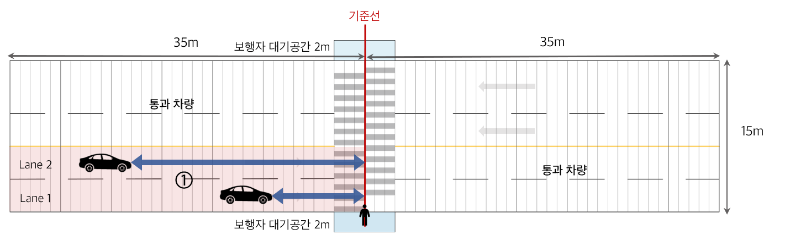
대기공간에서 가까운 차로의 접근 차량과 기준선 사이 거리를 판독합니다.
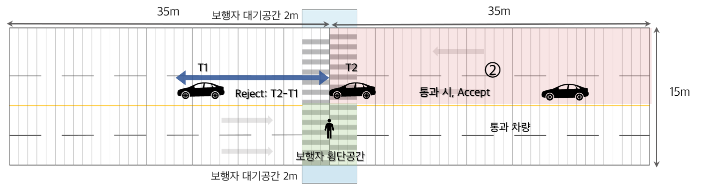
앞뒤 차량이 같은 기준선을 통과한 시각의 차이 T2 − T1을 기록합니다. 그림은 Zone 2의 판독 예시입니다.
중앙선에서 반대편 접근 차량을 확인하고 기준선과 차량 사이 거리를 판독합니다.
Lag는 횡단 여부를 판단하는 순간 기준선에서 접근 차량까지의 거리입니다. 수락·거부 거리 분포를 이용해 임계거리인 Critical lag를 구했습니다.
Gap은 앞 차량이 기준선을 지난 뒤 다음 차량이 도착하기까지의 시간입니다. 수락·거부 시간 간격 분포에서 Critical gap을 구했습니다.
개인: 보행자 1명 / 군집: 동행자 2명 이상.
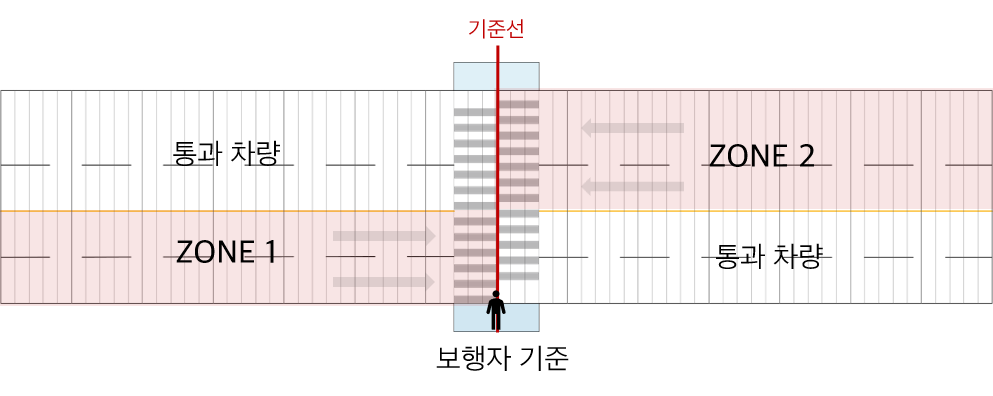
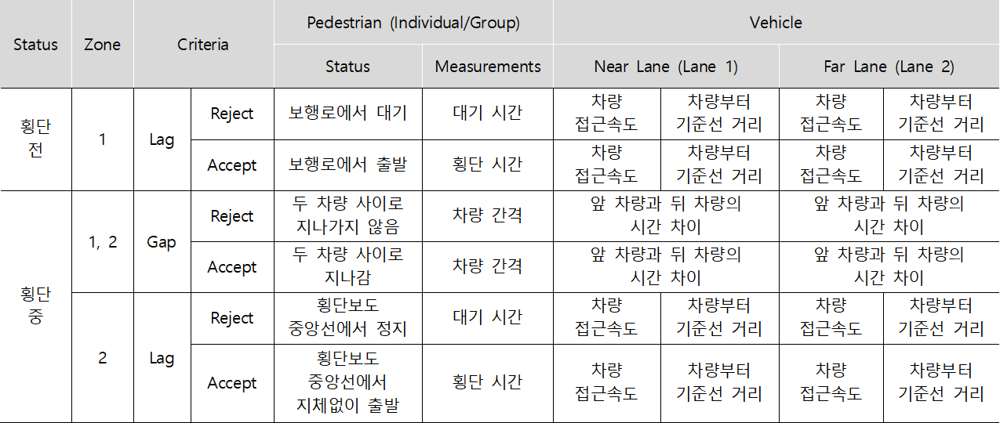
교차로, 버스정류장과 시야 방해 요소의 영향을 줄일 수 있고 높은 위치에서 촬영이 가능한 보라매병원역 인근 왕복 4차로 비신호 횡단보도를 선정했습니다.
2023년 4월 3–10일
675 Accept / 241 Reject
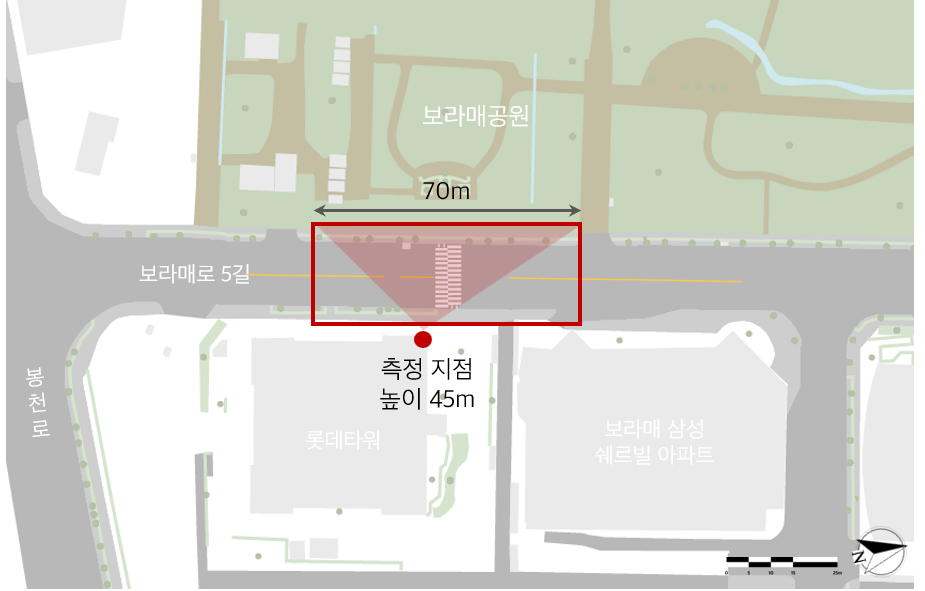
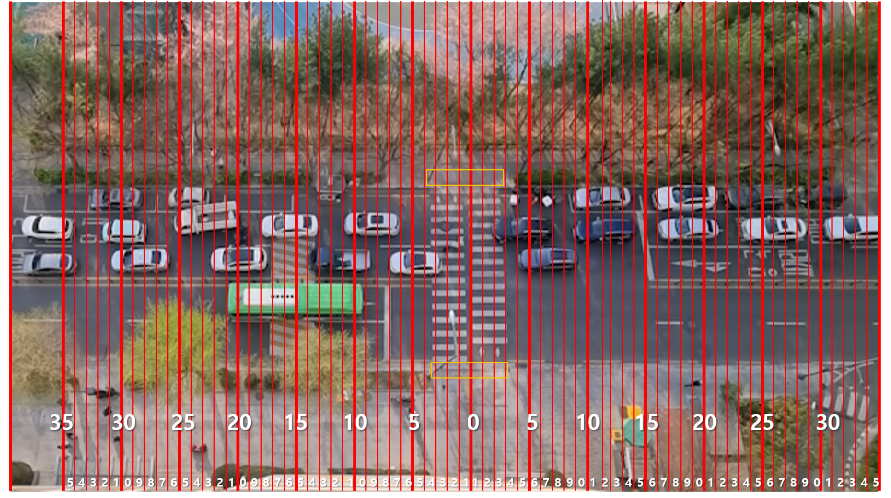
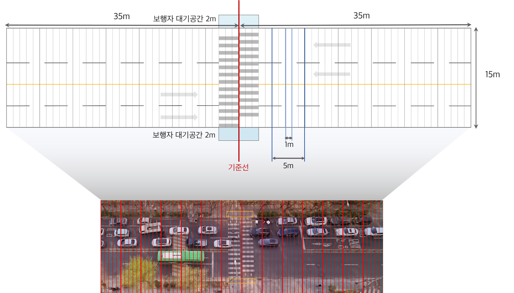
수락·거부 건수는 Lag 관측 자료 기준입니다. 본 페이지의 관측 규모와 임계값은 최종 졸업설계 결과로 통일했습니다.
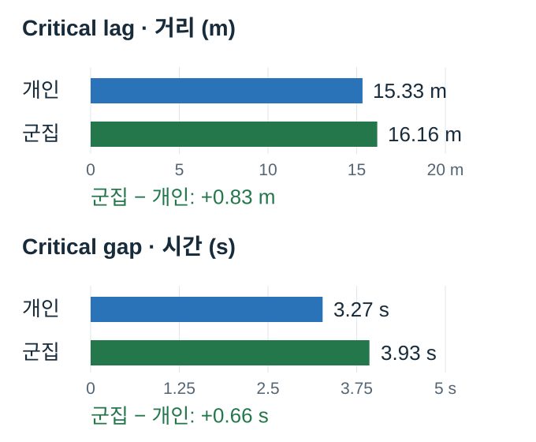
| 대상 | Critical lag (거리) | Critical gap (시간) |
|---|---|---|
| 개인 보행자 | 15.33 m | 3.27 s |
| 군집 보행자 | 16.16 m | 3.93 s |
군집의 Critical lag는 개인보다 0.83 m, Critical gap은 0.66 s 컸습니다. 같은 횡단 환경에서도 개인과 군집의 수락 기준이 달랐습니다.
수락 간격의 누적확률과 거부 간격의 역누적확률 곡선이 만나는 지점을 임계간격으로 산출했습니다. 아래는 거리와 시간의 개인·군집 분석 그래프입니다.
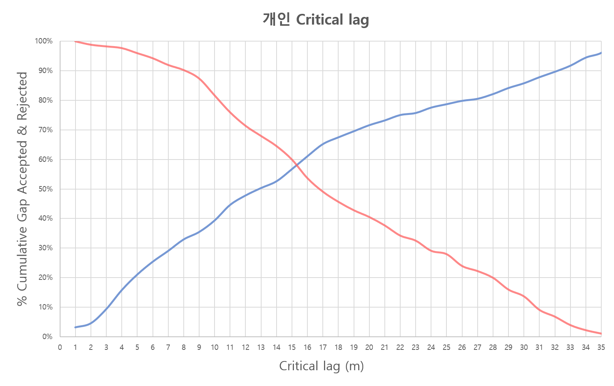
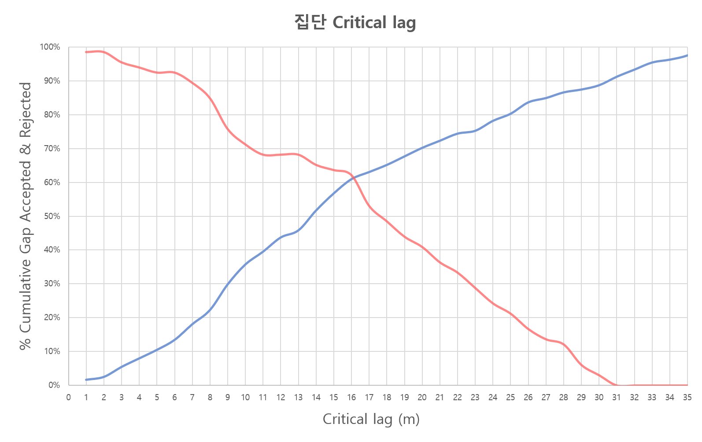
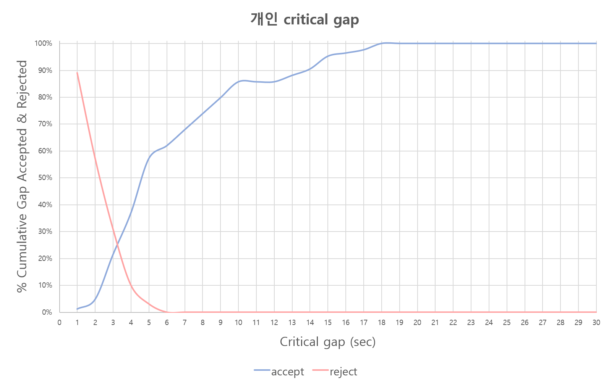
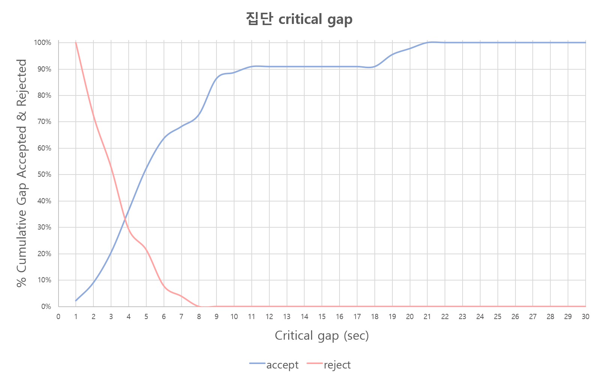
같은 차량 거리에서도 개인 보행자는 군집보다 차량 속도가 높을 때 횡단을 거부하는 경향이 나타났습니다. 관찰자료의 경향이며, 이를 인과관계로 해석하지 않았습니다.
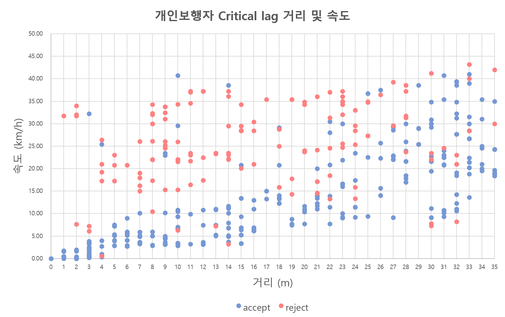
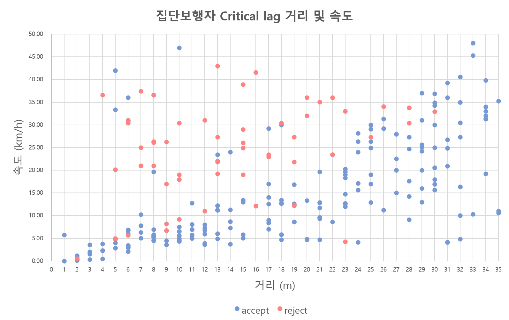
한계: 단일 횡단보도에서 수집한 관찰자료이며, 차량 위치는 현장 지형지물을 이용한 1 m 간격 기준으로 판독했습니다. 더 정밀한 측정 장비와 다양한 대상지, 계절·날씨 조건으로 확장할 필요가 있습니다.

대상지 선정, 영상 기반 판독과 관측 기준, 개인·군집 비교 결과를 연구 포스터와 학사논문으로 정리했습니다.
제26회 도시공학과 졸업작품전 1위 및 한국교통연구원장상, 2023 CAU 공학학술제 공과대학장상을 수상했습니다.
DoSeeThink 포스터 원문 열기 ↗학사논문 원문 열기 ↗이 연구에서는 사람이 차량의 거리와 속도를 보고 언제 횡단할지 판단하는 과정을 관찰했습니다. 이후 대학원에서는 반대로 카메라와 라이다가 차량을 어떻게 관측하고 상태를 추정해야 하는지를 연구했습니다. 관측 가능한 정보를 정의한 뒤 판단 기준을 설계한다는 접근은 이후 센서융합 연구로 이어졌습니다.
연결 연구 → 강화학습 기반 카메라-라이다 센서융합 차량 추적